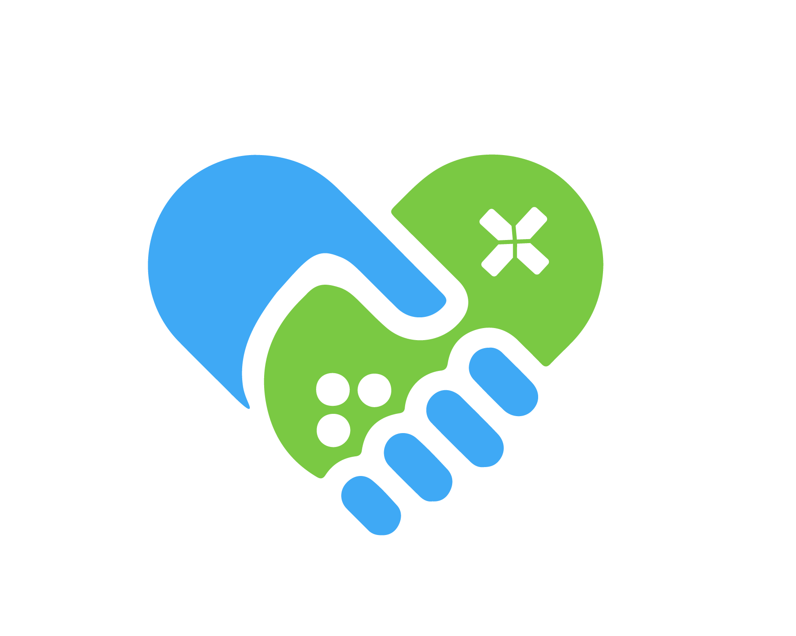
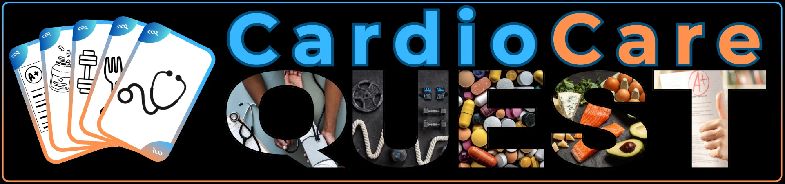
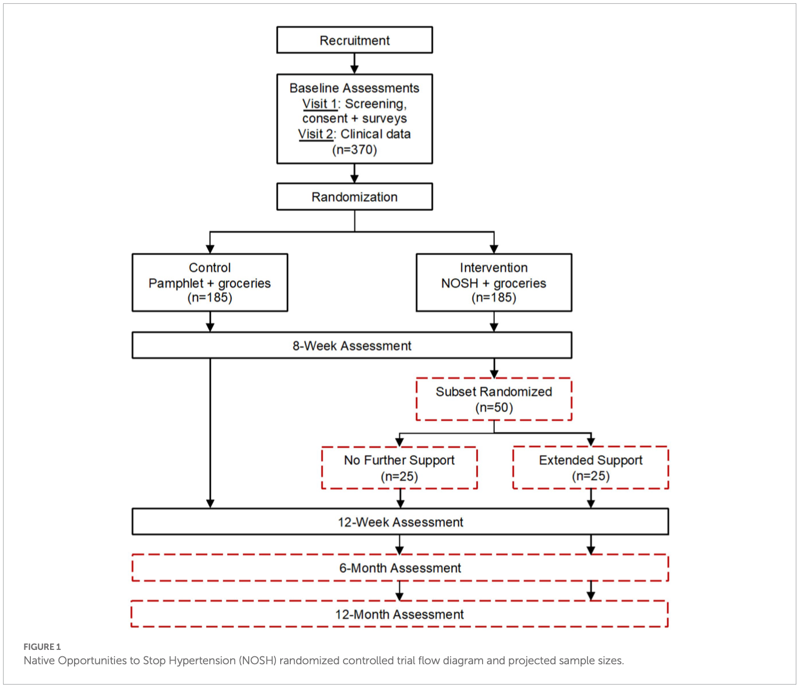
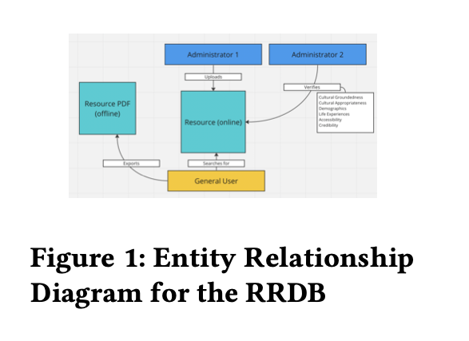

Comprehensive Exam
Playful Health Technology for Hypertension Management at the Intersection of Indigeneity and Disability
Pavan Prasad Gorintla
Committee: Dr. Jared Duval (chair) · Dr. Ashish Amresh · Dr. Igor Steinmacher · Dr. Laia Turmo Vidal


How common is hypertension among Navajo adults: the Navajo Health and Nutrition Survey. [1]
From the paper

Redrawn from the paper
Find out how many Navajo adults have hypertension, and what goes with it.
780 Navajo adults, aged 20 to 91, from across the Navajo Nation, 1991 to 1992.
Focus: households were chosen at random in three stages, so the results represent all adults on the reservation. Blood pressure was measured three times.
19% of Navajo adults had hypertension. 97 adults had high blood pressure when measured; only 50 of them had been told by a health worker that they had it.
Hypertension in Western Alaska Native people: the WATCH study. [1]
From the paper

Redrawn from the paper
Find out how many Alaska Native adults have hypertension, and how many know it, treat it, and control it.
Alaska Native adults in four study groups in the Norton Sound and Yukon-Kuskokwim regions of western Alaska.
Focus: the first visit data from four study groups were combined into one large dataset.
30% had hypertension. Of them, 64% knew they had it, 61% were taking medicine, and 39% had it under control.
How patients and providers see hypertension in a tribal health system. [1]
From the paper

Understand how patients and providers see hypertension, how they manage it, and how they talk about it.
16 Alaska Native and American Indian patients and 5 primary care providers, Southcentral Foundation, Anchorage.
Focus: four focus groups, two with patients and two with providers, analysed with thematic analysis.
Patients often saw hypertension as a short-term state caused by stress. Providers saw it as a long-term condition.
RQ1 · Care at home
Two trial plans bring heart care into the home.

Adults with heart failure, Gallup Indian Medical Center and Tohatchi Health Clinic, Navajo Nation (the Hózhó trial).
Five groups cross over every 30 days, so every patient receives the model. A study team starts and adjusts medicines by phone, using readings from a home blood pressure cuff given to every patient. [1]

370 urban American Indian and Alaska Native adults planned, at three urban Indian clinics in Washington and Oklahoma (protocol).
Community dietitians tailored the DASH diet with traditional foods such as corn, salmon, beans and squash. Both groups receive the same $30 weekly groceries, so the trial tests the counseling itself. [2]
RQ1 · Hypertension games
Practicing a clinic visit in a serious game: eSMART.

Adults with diabetes and hypertension from the community, in 11 focus groups.
Their stories became the scripts for three virtual clinic staff. Captions, first added for players with hearing loss, helped all users and became the default. [1]
109 adults with hypertension in Ohio: 75 practiced a virtual clinic visit each month, and 34 watched a health video each month, for 3 months.
Ratings of talks with providers rose in the game group over time (time × group, p = .035), but the groups did not differ overall (p = .56). Health literacy did not change. [2]
Co-designing hypertension games with Indigenous participants. [1]
From the paper

Learn how games for hypertension, made together with Indigenous people, can reflect Indigenous ways of knowing.
14 Indigenous participants at a 2-hour workshop within a conference in Northern Arizona: one each identified as Hopi, Navajo, Diné, Chickasaw, Hidatsa, Oneida and Native Hawaiian; 7 did not disclose.
Focus: one group per factor sketched game ideas. The team turned 17 designs into 5 prototypes and compared them side by side.
Five design strategies: gamification, reappropriation of familiar game formats, cultural narratives, incentivized progression, and open play.
A step-tracking game for Lumbee adults with hypertension. [1]
From the paper

Test whether a game made with the Lumbee community, linked to a step tracker, increases daily steps and hypertension self-care.
220 Lumbee adults with hypertension planned, in Robeson County, North Carolina.
Focus: steps from a Fitbit move the player along a trail to cultural landmarks. The other group gets a Fitbit and the same lessons on paper.
This is a trial plan. The main outcome is daily steps at 3 and 6 months; blood pressure and self-care are also measured.
Assistive technology provision within the Navajo Nation. [1]
From the paper

Learn what helps assistive technology, such as wheelchairs and hearing aids, work for people on the Navajo Nation.
28 assistive technology users and 7 providers from four Navajo service units; groups met in Chinle, Arizona.
Focus: in a talking circle each person speaks in turn. Four groups were held in Diné bizaad (Navajo), led by Navajo staff.
The main theme was feeling understood, or not. 57% of users lived more than 20 miles from town, and poor roads and housing disabled them most.
RQ1.1 · Fitting the measures
Two Diné cohort studies read standard measures in context.

530 Navajo infants, Navajo Birth Cohort Study, six Indian Health Service units. Researchers, clinicians and Navajo community members reviewed the items before use.
At 10 months, 64.8% of mothers answered not yet to walking beside furniture with one hand. The authors link this to cradle boards and to many adults on hand to hold the child. [1]
138 Diné children aged about 4, Navajo Birth Cohort Study, six field sites; Diné staff fluent in Diné Bizaad clarified items.
Spatial and nonverbal scores were average and verbal scores lower. The authors weigh four explanations, including test bias and a different developmental path. [2]
RQ2 · Community decides
Two Hopi studies: a tribal program sets the requirements, youth test the app.

15 Hopi Behavioral Health Services staff, Second Mesa, Arizona, 2023.
Many clients prefer documents read to them. Information mediators, such as parents and grandparents searching for a relative, will be major users. [1]

9 Hopi/Tewa youth aged 16 to 24, over Zoom, 2021.
Youth wanted to use the app again (4.55 of 5), but rated “this app reflected me and my culture” lowest (3.0 of 5). They asked for Hopi-specific images, such as the mesas. [2]
Where this review leads: CardioCare Quest.

Diet
DASH Diet · Salt Sludge
Exercise
Dog Walking
Medication
Pill Path
Education
Vascular Village · Bingo Bash
Measurement
Daily Check-In
Backup
How can movement games include people with limited mobility?
Start where the person is
Heart Health Mountain sets each step goal from the person’s own tolerable level [1].
Who can join
The same trial requires walking without a walker or another person’s help [1].
Build up slowly
In the hula trial, continuous dancing rose from 10 to 40 minutes over the classes [2].
Seated options
Okoro and colleagues recommend brochures that show exercises for wheelchair users and people who use walking aids [3].
From the paper
Backup
Closed games or open play?
Closed game
The system sets the rules and measures performance, as in eSMART [1] and Heart Health Mountain [2].
Open play
Players can change the rules; play is built on what people already do in daily life.
Situated Play Design
Three steps: find the play that already happens, design to support it, and test it in daily life [3].
From the paper
Backup
How would you classify these hypertension games?
Purpose
Focused on health: the main goal is a health outcome, not only fun [1].
Player
Patients managing their own condition, with education for self-directed care.
Stage of disease
Clinical disease: people already living with hypertension.
Examples
eSMART (practice a clinic visit) [2], Heart Health Mountain (steps) [3], and the five co-designed prototypes [4].
From the paper
Backup
Why serious games for hypertension self-management?
Practice a skill
Players practiced a clinic visit; ratings of their talks with providers rose over time [1].
Daily progress
Steps from a tracker move the player toward cultural landmarks [2].
Made with the community
Indigenous participants made 17 designs, which the team turned into 5 prototypes, one per factor [3].
From the paper
Backup
Why research through design for a wicked problem?
Wicked problem
A problem with no single correct answer; solutions are better or worse, not right or wrong [1].
Research through Design
Making prototypes with the community is how new knowledge is produced [2].
From the paper